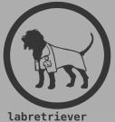

Get User Authentication Token
get_user_auth_token.RdThis function retrieves an authentication token from a specified URL using a username and password.
Arguments
- url
A character string specifying the view against which to send a request. This should be constructed using database_info -- see the example.
- username
A character string specifying the user's username.
- password
A character string specifying the user's password.
Note
do not save your auth token in a public repository. For example, you might put it in your .Renviron and then make sure that your .Renviron is in your .gitignore. Otherwise, save it outside of a github tracked directory or otherwise ensure that it will not be pushed up to github
Examples
if (FALSE) {
# Note: This example is wrapped in \dontrun{} because it requires a valid API
# endpoint and authentication credentials. Please replace the example URL,
# username, and password with your actual API endpoint and credentials to test
# the function.
# Get the user authentication token
auth_url <- "https://your-api.com/api/auth-token/"
username <- "your_username"
password <- "your_password"
token <- get_user_auth_token(auth_url, username, password)
print(token)
# Set the token as an environment variable
# usethis::edit_r_environ("project")
# This opens a file called .Renviron in the project directory
# IMPORTANT: Immediately create a .gitignore and add
# .Renviron to it to avoid committing the login token to Github
# Add your token to the .Renviron file like this
# TOKEN=<your token>
# Reload the project, and now you can access the environmental
# variable token
# print(Sys.getenv("TOKEN"))
# Define the count endpoint URL
record_count_url <- "https://your-api.com/data_table/count/"
# Use the authentication token with httr like this:
# token <- Sys.getenv("TOKEN")
my_api_call <- labretreiver::retrieve(record_count_url, token)
# Get the content of the API call
httr::content(my_api_call)
}